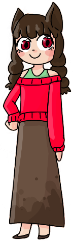
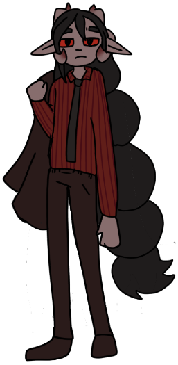
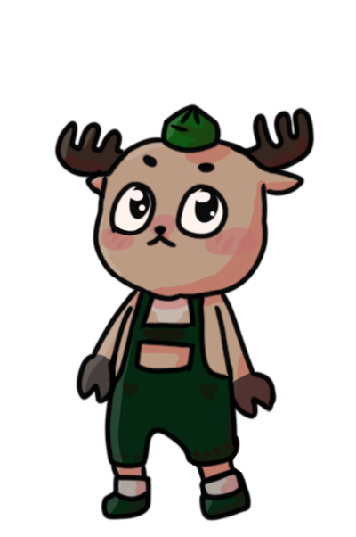

The KoW Roleplay Character Wiki
Amam
| Name: | Anne Milly Almond Milk(Am Am) |
|---|---|
| Gender: | Girl(probably) |
| Species: | equine human |
| Age: | 5000 |
| Bio: | She grew up in a ranch house with 4 other siblings. All her other siblings had a different father. She is used to blood cause he mother was a butcher |
| Personality: | Bubbly, and nice. Loves apples and hate bananas (she thinks that look stupid and she hates the color yellow). |
| Appearance: | 4'6 and 75 lbs. She has horse ears and he irises are shaped like apples and her pupils are shaped like apples seeds. Her hair is dark brown and she wears it in two short braids. And she looks about 12-14. She wears a bright red off the shoulder sweater with a light green tank top underneath. She wears a light brown maxi skirt that is slightly darker at the bottom (stained from mud). And wears brown flats. |
| Talents/Skills: | Can run really fast, and can carry 2 times her body weight. |
| Strengths: | If she eats and apple grown from Francisco, she can carry 4 times her body weight. Can turn into a centaur but that's the most horse she can be. Amazing at baking but godly at baking apple pie and other apples treats. |
| Weaknesses: | Deathly allergic to nuts and bananas. And (not deathly) allergic to latex and dogs(and most other animals except farm animals(cows, sheep, pigs, chickens, and horses). Has an awful tendency to vomit when she gets too excited, angry, or stressed. |
| Dating: | (Previously)An apples tree named Francisco Vázquez de Coronado |

Demon Prince
| Name: | chase chasington |
|---|---|
| Gender: | male |
| Species: | demon (royality) |
| Age: | 15000000 |
| Bio: | young handsome man very hot and sexy yet a horrible personality that drives women away longs to be a rebellious spirit so he refuses to take the thrown despite being the only worthy heir he is into making tiktok thirst trap videos and hanging out with his best friend mr morris he loves fishing and other dad like activities |
| Personality: | hot headed, charming, smart, impulsive |
| Appearance: | 6ft light brown skin, two sets of horns ram and standard demon horns, standard black suit with a red undershirt, very long braided hair, has the posture of a shrimp ü¶ê red eyes |
| Talents/Skills: | can summon demons , fire, very good with his homemade pistol with a knife attached to it |
| Strengths: | super strong, sexy, |
| Weaknesses: | anger issues, total slob, allergic to water (will die) |
| Dating: | n/a üò≠üò≠ |

Chuckles
| Name: | Chuckles |
|---|---|
| Gender: | Clown |
| Species: | Clown |
| Age: | clown age |
| Bio: | Chuckles the clown has dedicated his life to spreading joy and positivity through whatever means necessary |
| Personality: | Very cheerful and jovial, bubbling with excitement. Slightly unhinged |
| Appearance: | 7 foot 8 string bean of a man with wacky fun proportions, arms that reach ankles, short torso and super long legs, backwards knees, caked in clown makeup, pixie dust and everything that makes people happy blush, fiery red hair that extends 3 feet on each side of his head |
| Talents/Skills: | juggling, magic tricks, balloon animals, making children laugh, manslaughter |
| Weaknesses: | cannot stand the color yellow, hates old people, makes extremely dated references insatiable bloodlust |
| Dating: | (formerly Latisha the Elephant) Currently dating an old friend from his circus days, Roxanne the clown. |

Clyde Pogsdale
| Name: | Clyde Pogsdale |
|---|---|
| Gender: | Male(Most likely) |
| Species: | Reindeer Animorph |
| Age: | 2 |
| Bio: | A young man with strapping looks and thick antlers. He has laterhosen and a funny hat shaped like a upright pentagon. His fur is light brown and his eyes are large, black, and sparkly. He constantly mumbles about the people in black, wondering if they are there around every corner. He is a paranoid and frantic person, often acting on cowardly impulses. Despite his fears, he often sympathizes with others and their troubles and listens to them. He loves a good soak in a hot maple syrup bath, and long Razor scooter rides on the beaches. He works as a car warranty salesman and will do anything for you to sign his check. Contact him at 1-800-CLOGS. |
| Personality: | See above ^ I didn’t know the difference between bio and personality |
| Appearance: | 1 and 1/2 feet of pure screaming chaos, he usually screams at anything mildly scary or Femboys. He’s scared of mirrors. He’s a femboy on weekends. |
| Talents/Skills: | Origami |
| Strengths: | He can lift 20 pounds of rubber ducky in both hands, his strong fear of many things has made him a super Olympic athlete, capable of running faster than [REDACTED]. |
| Weaknesses: | Everything except origami and speeding |
| Dating: | A pinecone named Caroline |

Mr. Morris
| Name: | Mr. Morris |
|---|---|
| Gender: | Man |
| Species: | Humans |
| Age: | 37 |
| Bio: | Works in an office. Putting in those hours. Loves helping his company save on their taxes. |
| Personality: | Fun loving guy, but don't let that fool ya! When it
comes to getting the work done, Mr morris will always be there to solve your tax needs~
Always is looking for the best deals for his three wonderful children. They mean the world to him, and he makes sure they know that with their wealthy college funds. He will do anything for those stinkers! He loves to post funny MEMES about his silly wife! |
| Appearance: | 5'8' and scrawny. Always has a fun button up! Growing some grays (Oh no!) Wears a golf visor when not working |
| Talents/Skills: | Amazing at taxes, once saved his company 750K in one month!!!
Loved by his boss, may even become the VP if he is lucky. Avid pog collector, loved them since he was a little lad, but don't tell his wife! Loves his three kids: Caden, Kenny, and Jenn! Some say he is a hard worker, but he feels like he has never worked a day in his life (He LOVES TAXES) Sometimes goes a little wacky. Mediocre at golfing |
| Strengths: | N/A |
| Weaknesses: | He hates to admit it, but all these years helpin' with taxes has taken a TAX on his body! He can't run or lift like he use to... |
| Dating: | His wonderful wife! Sorry ladies, but this youthful spirit is taken! |